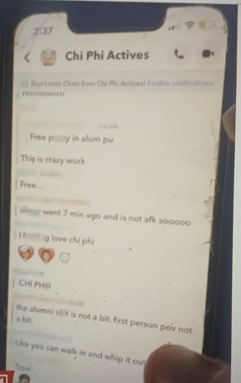
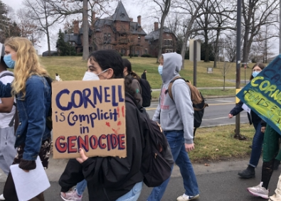
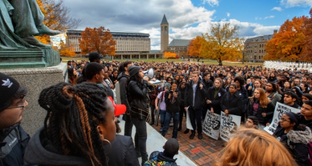
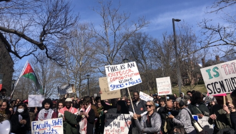

2024 Cornell University Rape Case
On 16th September 2026 a former student of Cornell University- Jane Doe filed a civil lawsuit against the university. Doe alleged that she was drugged and gang raped by the seven students at the Chi Phi fraternity house in 2024, and that cornell failed to protect her and punish the alleged perpetrators.
WHAT HAPPENED?
- At around 8:30p.m on October 19,2024, Jane Doe a 20-year-old student at Cornell University, attented a sorority social event at Moonies Bar & Nightclub in Ithaca, New York.
- She alleged that the bar staff were aware that she was below the legal drinking age in United States(21), but she was still provided with at least one drink at the establishment.
- According to Jane, by 11p.m., she had drunk approximately 10 drinks in three hours.
- She walked about 1 mile from the bar to visit a male friend-MATTHEW INGALLS, a memberof the school's Chi Phi chapter, at the fraternity house located at 107 Edgenoor Lane.
- According to Doe, the male friend took her inside the fraternity house, gave her another beer, and proposed a threesome with a second man.
- Her 2024 signed statement to police said she "agreed due to how attracted she was to him".
- She consumed marijuana, rum, and ketamine with the men before engaging in sexual activity.
- She reportedly developed bruising as a result of the sexual activity and she was pressured to consume the ketamine.
- She noted that it was her first time consuming the drug.
- She later engaged in further sexual activity with one of these men and a third man that enetered the room.
- Later, at around 1:42a.m., some of the men exchanged Snapchat messages in a group chat called "Chi Phi Actives".
- As four additional men entered the room, Doe was "horrified" and hid under the covers of the bed.
- According to her 2024 report, these men reportedly ingested ketamine and a majority of them left after making additional advances.
- At various points, she allegedly told some of them that she was "uncomfortable" and "tired".
- As the majority of the men left, two of the men removed her to another room.
- "I had become extremely uncomfortable with how this night was turning out, so my thought was, if I do ketamine again, maybe I will pass out.
- My thought was that if I passed out and these men have sex with me, then they could have been charged with rape at this point," she would later say in a six-page sworn statement to Cornell police.
- In documents from Cornell's Title IX investigation, she described hiding under the covers in a bed as more men came into the room.
- At Cornell's Title IX hearing in May 2025, Doe alleged that at this point these two men were "just raping" her as she was "in and out of consciousness".
- She described this as her "worst" experience of the night.
- She also told the police in her longer initial statement[clarification needed] that at this point, her eyes were "looking in different directions" and she became "completely numb to the situation".
- Prosecutors did not seek additional records of the incident beyond Jane Doe’s six-page statement to campus police and did not review the voluminous record of the internal probe.
THE CASE TAKES A NEW TURN
What happened after the night?
- According to the records reviewed by The New York Times, Jane Doe returned to her residence on the morning of October 20, 2024, after spending the night at Chi Phi.
- On October 21, Jane Doe reportedly told her sorority “big sister” that people were calling her a “sl*t”. Around the same period, she exchanged text messages with Jonathan Newell, one of the men she would later accuse.
On October 22, she visited Cornell Health for a urinary tract infection and sought testing for sexually transmitted diseases. According to The Times, she told investigators that she described the infection to the doctor as having occurred in a “traumatic way”.
Messages of Snapchat groupchat-"Chi Phi Actives"

(1:42 AM):"Free pussy in alum pu"
(2:19 AM):"This is crazy work"
(2:19 AM):"Free..."
(2:20 AM):"[reducted] went 7 min ago and is not afk soooooo"
(2:28 AM):"I fucking love chi phi"
(2:28 AM): "CHI PHIII"
(2:29 AM):"the alumni shit is not a bit. first hand pov not a bit"
(2:31 AM):"Like you can walk in and whit it out rn"
(2:33 AM):"Type"
(2:35 AM):*Sent image of Doe smiling with another man*
(2:35 AM):"Shop still open?"
(2:35 AM): "Yeah"
(2:35 AM):"No way!"
(2:35 AM):"LFG"
(2:25 AM):"[reducted] laying rn"
(2:36 AM):"Nice.Nice guys.Is my room open?"
(2:36 AM):"Lowkey he's cucking all of us"
(2:36 AM):"Nvm"
(2:36 AM):"Fuck off mid"
(2:36 AM):"Kid"
(2:36 AM):"I want my license"
(TIME UNKOWN):"Are you guys at least naked?"
(TIME UNKOWN):"Boys come whip it out"
Conversations between Jane Doe and two frat brothers after the incident
3 weeks after the night Jane Doe called Matthew Ingalls a friend of hers who invited her to the fraternity house.
- Matthew Ingalls:"... want me to give my recollection of the entire night?"
- Jane Doe: She told him that she spent time in the emergency room and in therapy...
"...there's so much damage on my body and my brain"
"...if I wanted to take this somewhere, what y'all did would be classified as gang rape...you already knew when i came in i was 10 shots down."
- Matthew Ingalls:"You did tell me you were sober by the way."
"You did, you said you hadn't been anywhere" -
Jane Doe: She asked him how they ended up in a threesome with one of his frat brothers.
-
Matthew Ingalls:"So you, you come in, say hi.We start dancing for like maybe 3-5 minutes, and then I pop up the question. You say yes."
"Then I remember,like,we didn't know who else to bring so I go up to [unidentified] who was on the dance floor too,and I pop up the question and he's like,'yo', and then we go upstairs." -
Jane Doe: She said that 4 were in bed and rest were standing.
-
Matthew Ingalls:"I have racked my brain for this mystery. You know it's possible that both of us like,remeber,this,and it's not true."
-
Jane Doe:"No,because I remember looking up and being like 'That's too many people.'"
"Do you remember how any of these guys walked in?" -
Matthew Ingalls:"The party was sort of,like,crowded,so people started like um,filling up the balcony just because there was nowhere else to go."
-
Matthew didn't mention the text message he sent to Snapchat group chat writing "Boys, come whip it out."
Messages between Jane Doe and other frat member


-
Jane Doe:"bro everyone knows some random [message]told some of my freinds i dont even know who that is how [message] she know me???"
-
Jane Doe:"i will also say this is[message] RUINING my life temporarily" "my reputation is destroyed and i'm utterly ashamed"
-
Unknown:"you're right it'll get better and u think everyone's j jealous of us.. but also like everyone needs to grow up cause sexuality and sex and [message] is changing and stuff like this is going to become more common,, i'm also really open minded tho. i luv u king,,also tell anyone who gives u [message] that i'll actually beat them up that don't want the smoke i promise"
-
Frat member:"My ex told me that I'm being labeled as an assaulter in the public eye, I was going to ask if you may have said something along those lines to someone but Iknow you wouldn't"
-
Jane Doe:"i had a friend who was going to chi phi and i said don't" "but i've never mentioned your name"
-
Jane Doe:"i think i'm done talking to you. i know you lied."
The same day she went to the police.
57 MEN
- Matthew Ingalls
- Scott Norris
- Scott Kretzchmar
- Gilio Lopes
- Diego Sarabai
- Winston Lee
- Andrew Hage
- Henry Malarky
- Even Beyers
- Johny Lewis
- Matt Luebke
- Andrew Solnik
- Bennet Mccomb
- Danny Rusk
- Luke Verzella
- Ben Stewart
- Julian Bennet
- Cole Chapman
- Ryan Cordi
- Xavier Dacosta
- Erik Williams
- Pierce Fine
- Matt Hellerman
- Alex Jordan
- Micheal Keschner
- Jonathan Lim
- Matt Mcauley
- AJ Nambier
- Chin Okasi
- Aaron Seth
- Gabriel Pasnicuic
- Ryan Shim
- Milo Skolnick
- Sean Su
- Lucas Suero
- Johnathan Newell
- Jack Trapper
- Blake Haberstock
- Brett Kaufman
- Henry Friedburg
- Will Anderson
- Jason Chung
- John Kowalcyk
- Lucas Maley
- Matthew Calarco
- Matthew Keebler
- Matthew Meakem
- Matthew Pilc
- Miles Bramwit
- Nate Meakem
- Nicolas Gonzalez
Some are still unidentified.
ACTIONS TAKEN AGAINST THESE MEN
2 were suspended and five were told to write an essay.
STUDENT RALLIES



THIS CASE SHOULDN'T BE IGNORED. JANE DOE SHOULD GET JUSTICE.
QUESTIONS FOR THE CORNELL UNIVERSITY
-
WERE YOU ABLE TO PROVIDE THE JUSTICE TO JANE DOE?
-
DID YOU REALLY MADE THEM WRITE ESSAY AS THEIR PUNISMENT FOR RAPE?
-
WHY DON'T YOU RELEASE THE ESSAY? OR ARE THEY IN YOUR BANK ACCOUNT?
CORNELL
IT'S S.A, NOT ESSAY.
THOUGHT YOU WERE AN IVY LEAGUE SCHOOL